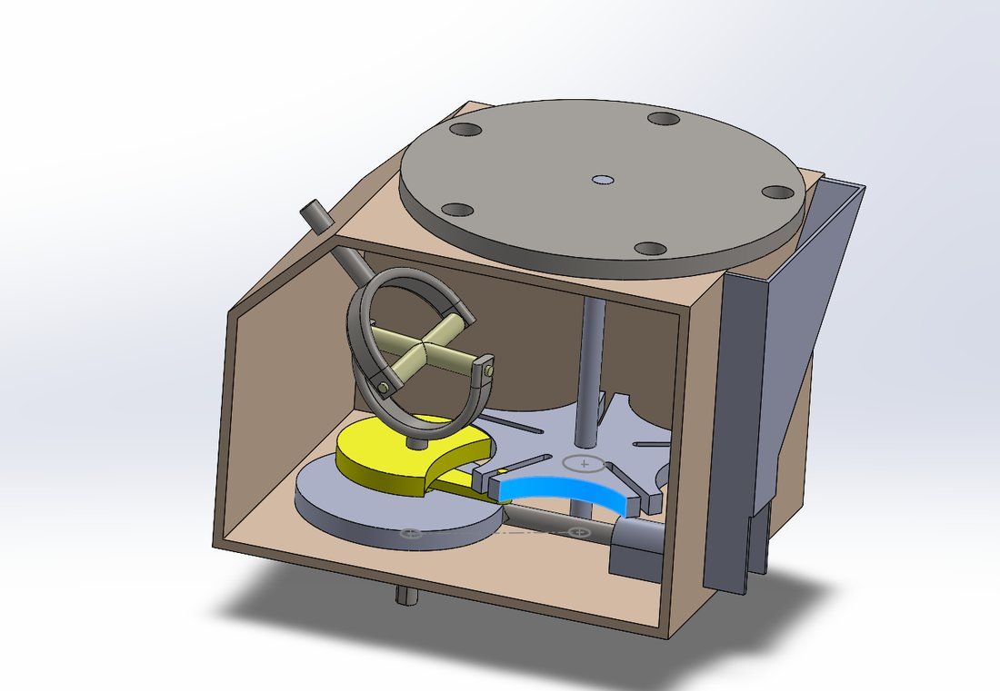

Fig. 2.1
Bottling Station Assembly
- SolidWorks assembly
- Design intent & mates
- Fits, tolerances, GD&T
- Fully defined drawings, BOM
In a detailed SolidWorks design course I modeled a bottling station assembly with the emphasis on design intent, part relationships, manufacturability, fits, tolerances, GD&T, and fully defined drawings. The point of the project was communication: every part had to be documented well enough that a machinist could make it and an assembler could put it together without asking me.
